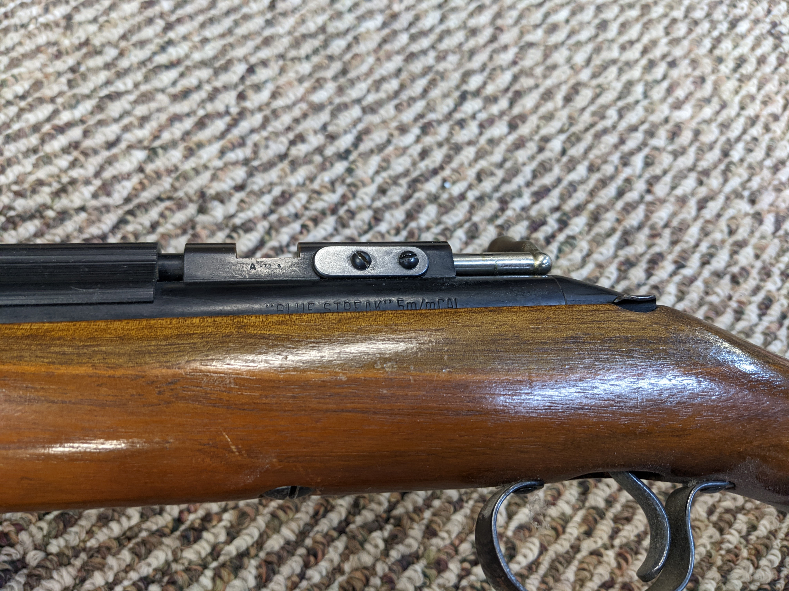
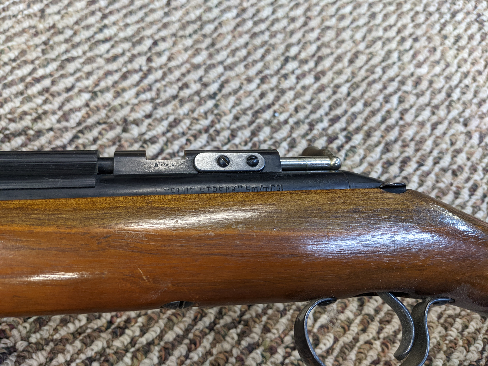

Right click any pic and choose open image in a new tab to view full-sized image
[1a-d] .22LR Winchester Model 74 sn304124A tube feed semiauto questionable operation
Mfg between 1938 and 1955


Right click any pic and choose open image in a new tab to view full-sized image
[2a-c] .22LR JC Higgins Model 103.18 single shot bolt questionable operation
Appears to be a Sears version of the Marlin Model 100 mfg from 1936-1959


Right click any pic and choose open image in a new tab to view full-sized image
[3a-d] .22LR Winchester Model 290 snB899282 tube feed semiauto
Mfg between 1963 and 1976. Pretty sure this was a Alexander Motors employee Christmas gift.


Right click any pic and choose open image in a new tab to view full-sized image
[4a-d] .22LR Remington Model Speedmaster 552 tube feed semiauto
Mfg between 1963 and 1976.


Right click any pic and choose open image in a new tab to view full-sized image
[5a-e] 12ga JC Higgins Model 66 tube feed semiauto
Maybe mfg by High Standard. No idea on age but I shot it as a kid >45 years ago.


Right click any pic and choose open image in a new tab to view full-sized image
[6a] .177 Crosman multi stroke Model Legacy 1000
Practically new.

Right click any pic and choose open image in a new tab to view full-sized image
[7a-d] .20 / 5mm Sheridan pellet multi stroke Model Blue Streak needs seals
I had this working at one time - great shooter. May need some love and parts
will be tough to find.

 

Right click any pic and choose open image in a new tab to view full-sized image
[8a-b] BB only Sears springer


Right click any pic and choose open image in a new tab to view full-sized image
[9a-b] .22short Rohm Model RG10 sn1929912 6 shot revolver

Right click any pic and choose open image in a new tab to view full-sized image
[10a-b] .38sp Rossi 6 snD667638 shot revolver

Right click any pic and choose open image in a new tab to view full-sized image
[11a-c] .22LR EIG Model E-16 snA238614 shot quad barrel
Right click any pic and choose open image in a new tab to view full-sized image
[12a-b] .38sp S&W Model Airweight snCMA3523 6 shot revolver
This was his every day carry gun.
Right click any pic and choose open image in a new tab to view full-sized image
[13a-b] .357mag Ruger Model Security Six sn158-58151 6 shot revolver
Don't think it's ever been shot.


Lots of .38sp ammo, BBs and pellets!